ДСУ „Математичко-информатичка гимназија“ - Скопје
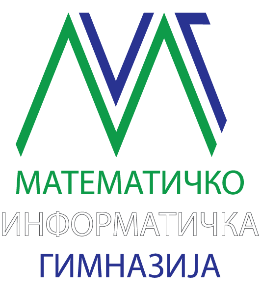
Букварче
Едукативна веб-апликација за помош при почетно читање на македонски јазик
Содржина
- Апстракт
- Вовед
- Проблем, мотивација и цел на проектот
- Општ преглед на решението
- Архитектура на системот
- Податоци, пример-текстови и локално зачувување
- Јадро за обработка на текст и разделување на текст на слогови
- Кориснички интерфејс и употреба на апликацијата
- Текови на работа и кориснички сценарија
- Гласовни можности и OCR интеграција
- Гемификација
- Заклучок
- Користена литература
1. Апстракт
„Букварче“ е веб-апликација за поддршка на почетното читање на македонски јазик. Таа овозможува автоматско разделување на текст на слогови, интерактивно читање со проверка по слогови и режим за вежбање со слушање. Корисникот напредува низ текстот преку сопствен говор, а системот применува елементи на гемификација за мотивација и следење на напредокот. Дополнително, може да се внесе сопствен текст или да се извлече текст од фотографија.
Главната вредност на проектот е што користи посебна логика за македонски јазик и овозможува децата самостојно да вежбаат читање. Во јадрото се применуваат нормализација на текст, разделување на текст на слогови базирано на правила, речнички исклучоци и споредување на говор со тековни и следни слогови. Така апликацијата претставува практично образовно решение, а не само визуелен интерфејс.
Проектот е изработен како статичка клиентска апликација со HTML, CSS и JavaScript. Нема сервер, база на податоци или кориснички профили, па затоа е лесен за користење, демонстрација и испорака.
2. Вовед
Читањето е основа за понатамошното учење. Ако ученикот уште во раната возраст не стекне сигурност во препознавање зборови, слогови и правилен изговор, тоа може да влијае и на успехот во други предмети. Во пракса, помошта најчесто доаѓа од наставник, родител или печатени материјали, но таквата поддршка не е секогаш достапна кога детето сака да вежба.
Токму затоа се појави потребата од апликација што ќе овозможи читањето да се вежба постепено, јасно и самостојно. Наместо текстот да биде прикажан како една целина, тој се дели на помали делови, со што читањето станува полесно за следење и совладување. На овој начин детето е водено чекор по чекор и може да напредува со сопствено темпо.
Целта на проектот е да се изработи практична апликација што ќе им помогне на децата во учењето читање на македонски јазик. Притоа, посебно внимание е посветено на јазичните правила на македонскиот јазик, бидејќи правилното разделување на текст на слогови не може целосно да се реши со општи алатки за други јазици.
Покрај образовната вредност, проектот има и практична примена. Апликацијата е замислена како едноставна и интересна за користење, со цел да го мотивира детето да вежба читање на полесен и попристапен начин.
3. Проблем, мотивација и цел на проектот
3.1 Проблем што се решава
Во почетното читање детето често се соочува со три тешкотии:
- Текстот изгледа преголем и непрегледен.
- Изговорот и следењето на зборот не се усогласени.
- Повратната информација доаѓа доцна или не е доволно јасна.
Кога текстот не е визуелно раздвоен, ученикот тешко го одредува следниот чекор. Кога нема јасна помош за изговор, вежбањето се прекинува или станува зависно од присуство на возрасен. Кога повратната информација не е веднаш достапна, ученикот не знае дали напредува правилно. Овој проект се обидува да ги реши сите три проблеми преку комбинација од јасен интерфејс, звучна поддршка и систем за тековна проверка.
3.2 Мотивација
Да се создаде алатка што навистина може да му помогне на дете, родител или наставник во секојдневна вежба.
3.3 Главна цел
Главната цел на проектот е да се изработи достапна, разбирлива и лесно пренослива веб-апликација која:
- дели македонски текст на слогови;
- е од забавен карактер, што би ги привлечило децата да ја користат;
- овозможува самостојно учење со користење микрофон и проверка на изговор;
- користи соодветни пример-текстови од официјлни извори, и дополнително преку скенирана слика и сопствен текст;
- следи напредок и помошни статистики;
4. Општ преглед на решението
Апликацијата е организирана околу две главни употреби: Игра и Вежбање.
Во Игра корисникот избира ниво и се движи низ текстот со цел да ја заврши мисијата. Овој режим е
мотивирачки: има низа, поени, ѕвезди, стикери, прослава и отклучување на следно ниво. Во рамките на играта
постојат два начина на проверка:
Глас, каде што микрофонот слуша и автоматски напредува;Провери, каде што возрасен или наставник бележи дали кажаниот дел бил точен.
Во Вежбање нема оценување. Наместо тоа, корисникот мирно слуша, запира, пушта повторно и може да
користи sample текст, сопствен рачен внес или фотографија. Овој режим е корисен кога целта не е натпреварувачка,
туку постепено запознавање со текстот.
5. Архитектура на системот
Апликацијата е реализирана како модуларна статичка веб-апликација. Наместо целиот код да биде сместен во еден голем фајл, проектот е поделен на слоеви: кориснички интерфејс, состојба и прогресија, јадро за обработка на текст, интеграции со browser API, податоци и build/test алатки.
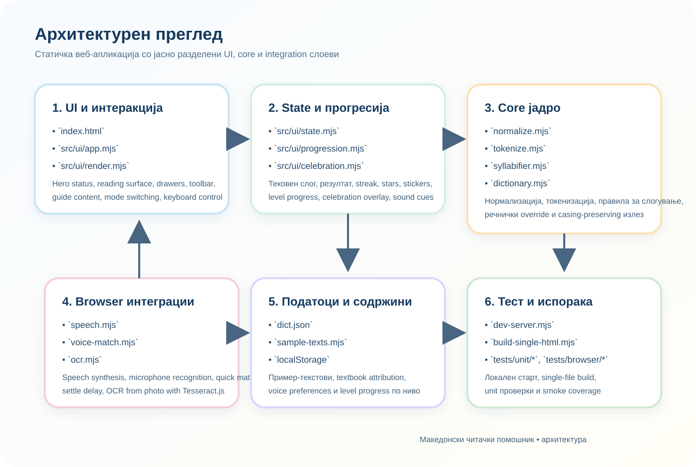
5.1 Главни архитектурни слоеви
Табела 4. Главни модули и одговорности
| Слој | Најважни датотеки | Одговорност |
|---|---|---|
| UI | index.html, src/ui/app.mjs, src/ui/render.mjs |
Прикажување, контролирање на интеракции и динамичко менување на интерфејс |
| State/Progression | src/ui/state.mjs, src/ui/progression.mjs, src/ui/celebration.mjs
|
Состојба на кругот, поени, ниво, ѕвезди, стикери, прослава |
| Core | src/core/normalize.mjs, tokenize.mjs, syllabifier.mjs,
dictionary.mjs
|
Јазична обработка и разделување на текст на слогови |
| Integrations | src/integrations/speech.mjs, src/integrations/ocr.mjs,
src/ui/voice-match.mjs
|
Глас, OCR и споредба на слушнат текст со слогови |
| Config/Data | dict.json, src/config/sample-texts.mjs, src/config/integrations.mjs
|
Речник, пример-текстови и конфигурација на надворешни алатки |
| Build/Test | scripts/dev-server.mjs, scripts/build-single-html.mjs, tests/* |
Стартување, пакување и проверка на проектот |
5.2 Статичка природа на решението
Во овој проект нема серверска логика за обработка на податоци. scripts/dev-server.mjs само ги
сервира статичките датотеки локално, без база, без API и без сметки за корисници. Тоа го прави проектот:
- лесен за демонстрација;
- лесен за носење на друг компјутер;
- безбеден во смисла дека нема централизирано чување на ученички податоци;
- погоден за училишна употреба и презентација.
6. Податоци, пример-текстови и локално зачувување
6.1 Пример-текстови
Еден од најважните делови од проектот е внимателно избраната библиотека на пример-текстови. Во
src/config/sample-texts.mjs се дефинирани вкупно 54 пример-текстови. Тие се
организирани по:
- одделение;
- тежина;
- должина.
6.2 Речник
dict.json е корективен слој над разделувањето на текстот на слогови базирно на правила. Во него се сместени
зборови за кои правилата сами по себе не даваат најдобар или најприроден резултат. Ова е особено важно за:
- зборови со сложени суфикси;
- зборови со јазично чувствителна поделба;
- зборови што треба да се усогласат со наставната практика.
Функцијата applyDictionaryWithCasing во src/core/dictionary.mjs овозможува речничката
форма да се примени без да се изгуби оригиналната големина на буквите во текстот. Тоа е мал, но многу важен детаљ
за квалитетен излез.
6.3 Локално зачувување
Проектот користи localStorage за три видови локални податоци:
- прогрес по нивоа;
- преференци за глас и микрофон;
- поставка за звучни ефекти.
Табела 6. Клучеви во localStorage
| Клуч | Што зачувува |
|---|---|
mk-reading-aid.level-progress.v1 |
дали ниво е прочитано, најдобар број ѕвезди, број на комплетирања и време на последно играње |
mk_reading_aid_speech_preferences |
избран глас, microphoneQuickMatch, microphoneSettleDelayMs |
mk-reading-aid.sound-enabled |
дали се вклучени звучните ефекти |
Важно е што овој пристап не бара сервер, а сепак му дава на корисникот чувство дека системот „памети“. Оваа локална меморија е доволна за образовен прототип и за реална школска демонстрација.
7. Јадро за обработка на текст и разделување на текст на слогови
7.1 Општ тек на обработка
За еден текст да стигне до корисничкиот интерфејс како низа од слогови, апликацијата поминува низ неколку чекори:
- токенизација на зборови и интерпункција;
- проверка дали зборот постои во речникот;
- правило-базирано разделување на слогови ако нема речничка форма;
- рендерирање на слоговите со јасни визуелни граници.
Овој процес е важен затоа што обезбедува рамнотежа меѓу автоматизација и лингвистичка точност. Само речник не би бил доволен, затоа што би барал огромен број рачни внесови. Само правила исто така не би биле доволни, затоа што кај дел од зборовите се јавуваат случаи каде е потребна јазична корекција.
7.2 Токенизација
src/core/tokenize.mjs користи регуларен израз за кирилични зборови и го дели текстот на:
wordтокени;textтокени.
Со ова интерпункцијата, празните места и новите редови не се губат. Токму затоа излезот ја зачувува оригиналната структура на пасусот, а разделувањето на текстот на слогови се применува само на зборовите.
7.3 Разделување на текст на слогови базирано на правила
src/core/syllabifier.mjs е едно од најсилните јадра на проектот. Таму се дефинирани:
- сет на вокали;
- правила за слоготворно
р; - дозволени почетни групи од две и три согласки;
- заштитени наставки како
-ство,-ски,-ствен,-чкии нивни варијанти.
Кодот не се потпира на едноставна поделба „пред секој самогласка“. Наместо тоа, се применува попрецизна логика што е посоодветна за правописот на македонски јазик.
7.4 Улога на речникот
Функцијата segmentWord(word, dictionaryEntries) прво проверува дали зборот постои во речникот. Ако
постои, се користи речничката форма; ако не, се активира segmentWordByRules(word). Овој пристап е
елегантен бидејќи:
- чува добра автоматска покриеност;
- овозможува рачна корекција каде што е потребно;
- не ја прави апликацијата зависна само од една техника.
7.5 Примери од тековната кодна база
Следната табела прикажува конкретни резултати од моменталната имплементација на проектот.
Табела 7. Примери на разделување на текст на слогови базиирано на правила и конечно разделување на текст на слогови
| Збор | Според правила | Финален резултат | Забелешка |
|---|---|---|---|
| чувство | чув-ство |
чув-ство |
правилата и речникот се совпаѓаат |
| англиски | ан-гли-ски |
ан-гли-ски |
правилата даваат добар резултат |
| единствен | е-дин-ствен |
е-дин-ствен |
заштитен суфикс -ствен |
| тргнаа | трг-на-а |
тр-гна-а |
речникот го коригира поточниот излез |
| палешка | па-ле-шка |
па-леш-ка |
речничка корекција |
| насмевката | на-сме-вка-та |
на-смев-ка-та |
речничка корекција |
| прваче | пр-ва-че |
пр-ва-че |
слоготворно р |
| енциклопедија | ен-ци-кло-пе-ди-ја |
ен-ци-кло-пе-ди-ја |
повеќесложен збор со добар автоматски излез |
8. Кориснички интерфејс и употреба на апликацијата
8.1 Статусна картичка
Статусниот дел е наменет да ја објасни состојбата на кругот без корисникот да мора да размислува технички. Во него се прикажуваат:
- активниот наслов на текстот или нивото;
- textbook attribution;
- прогресот во кругот;
- број на ѕвезди, низа и заработени стикери;
- копче што служи како брз прекинувач меѓу режимите.
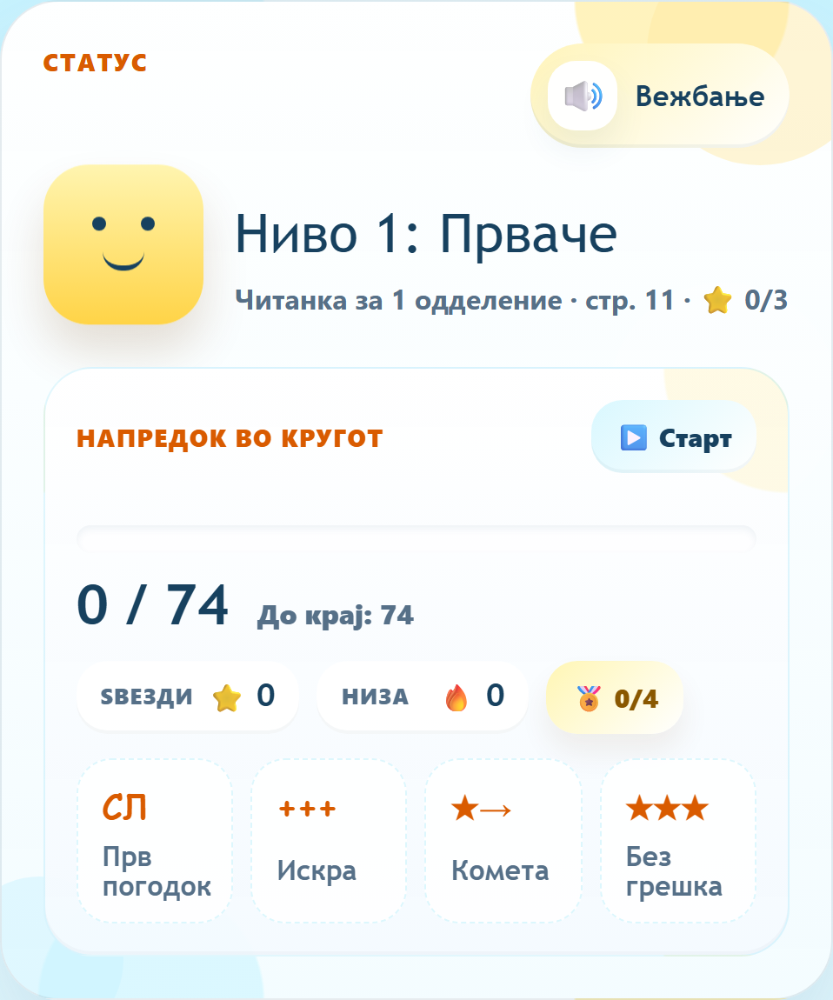
Овој дел е директно поврзан со updateDashboard() и updateHeroBadges() во
src/ui/app.mjs и src/ui/progression.mjs. Тоа значи дека статусната картичка не е
статична, туку жив приказ на моменталната логика на системот.
8.2 Контроли над површината за читање
Toolbar контролите се менуваат според режимот и според типот на проверка.
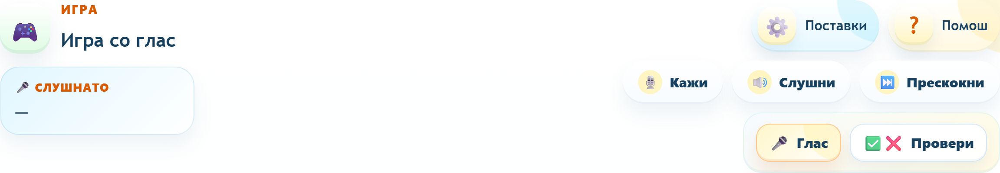
8.3 Префрлување меѓу „Глас“ и „Провери“
Во играта корисникот може јасно да избере како ќе се врши проверката. Ако прелистувачот не поддржува препознавање глас, системот автоматски се насочува кон рачна проверка.
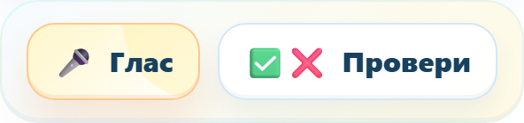
8.4 Површина за читање
Главната reading surface е местото каде разделувањето на слогови станува видливо и употребливо.
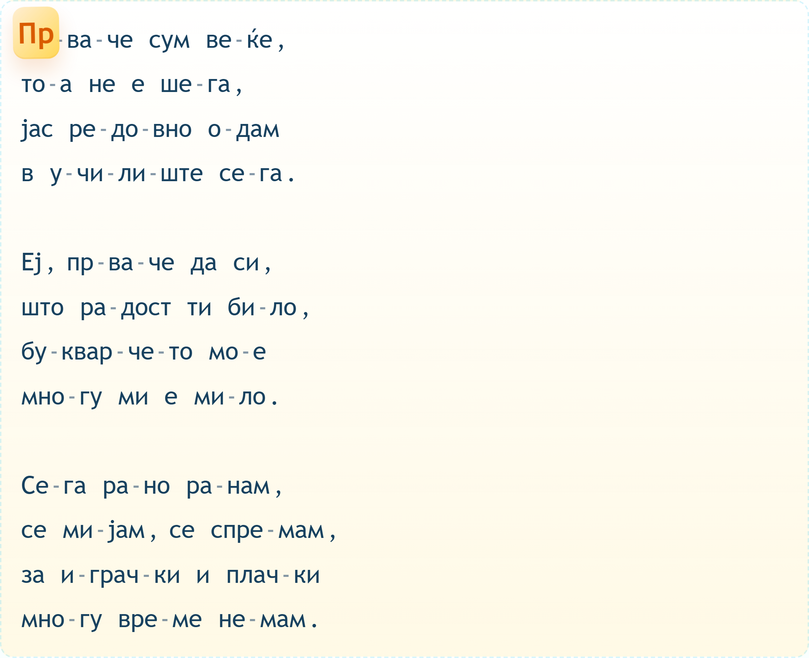
8.5 Избор на ниво
Во играта drawer панелот за внес се претвора во селектор на нивоа. Наместо едноставен dropdown, се користи grid на картички. Тоа е подобро за визуелно читање, за следење на отклучени нивоа и за чувство на напредок.
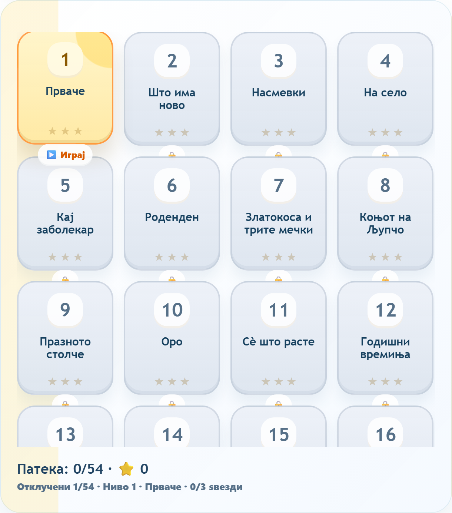
8.6 Внес преку фотографија и рачен текст
Во режимот за вежбање на корисникот му се нудат две многу практични можности: фотографирање страница и рачно внесување. Оваа одлука го прави проектот покорисен во пракса.
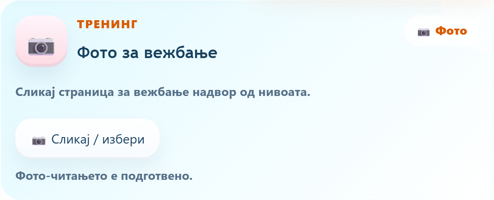
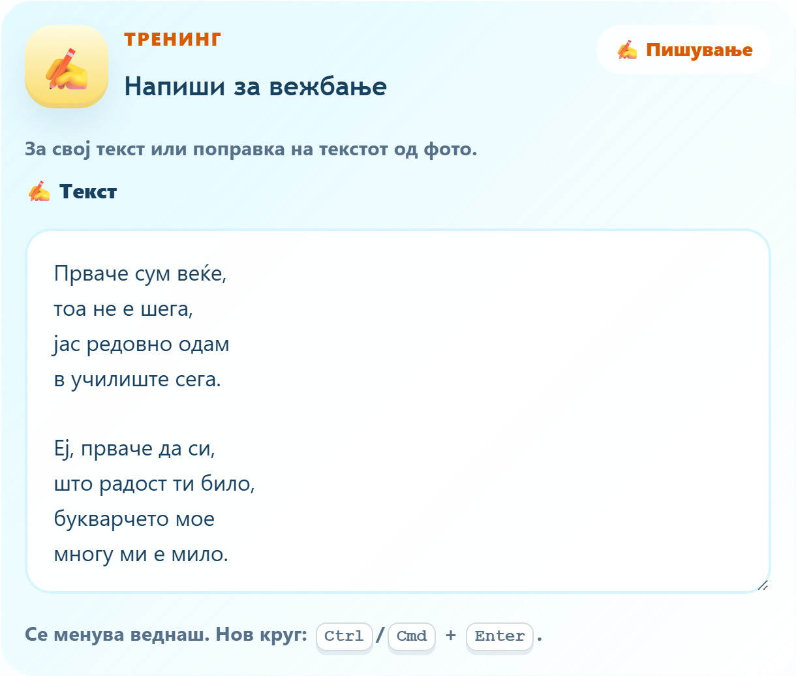
8.7 Drawer за поставки
Поставките се различни зависно од режимот. Во играта акцентот е на микрофонското однесување, а во вежбањето на брзината на читање.
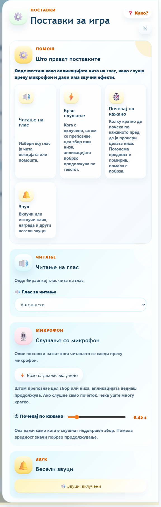
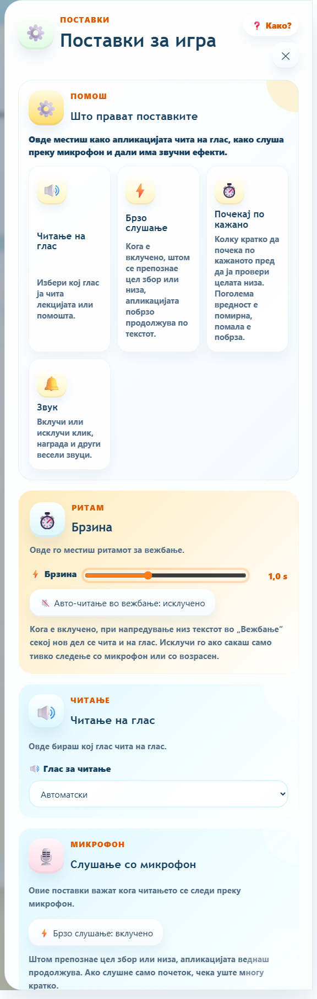
9. Текови на работа и кориснички сценарија
9.1 Главен тек на еден круг
Во следниот дијаграм е прикажан општиот тек на користење.
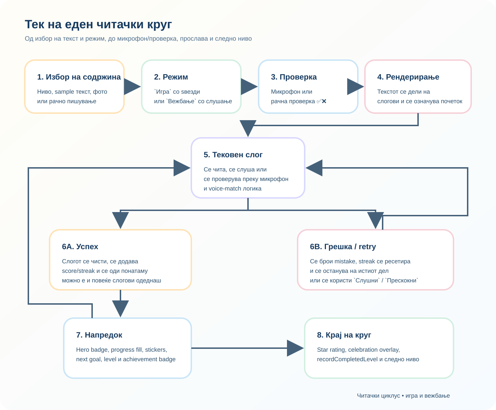
9.2 Сценарио А: Игра со микрофон
Ова е најинтерактивниот тек во апликацијата.
- Корисникот избира ниво, а апликацијата го прикажува текстот поделен на слогови и го активира микрофонот.
- Додека корисникот го изговара текстот, системот проверува дали кажаното се совпаѓа со тековниот или со следните слогови.
- Ако има совпаѓање, системот напредува; ако нема, корисникот добива предупредување и можност за нов обид.
- На крај се пресметуваат ѕвезди и се зачувува напредокот.
Овој тек е технички интересен затоа што не се проверува само еден слог како изолиран стринг. Системот може да препознае и повеќе слогови по ред ако корисникот кажал цел збор или кратка низа.
9.3 Сценарио Б: Игра со рачна проверка
Ова сценарио е важно за уреди или ситуации каде микрофонската проверка не е достапна или не е пожелна.
- Корисникот избира ниво.
- Возрасен го слуша изговорот на детето.
- По секој дел притиска
ТочноилиНеточно. - Апликацијата го поместува или задржува фокусот.
- Се пресметуваат истите награди како и во играта со микрофон.
9.4 Сценарио В: Вежбање со слушање
Во овој тек корисникот:
- избира sample текст, внесува свој текст или користи фотографија;
- пушта читање на глас со прилагодена брзина;
- паузира и продолжува по потреба;
9.5 Обработка на различни влезови
Апликацијата прифаќа три влезни патеки: sample текст, OCR од слика и изговор преку микрофон. Сите тие на крај се спојуваат во една заедничка обработка и реакција на интерфејсот.
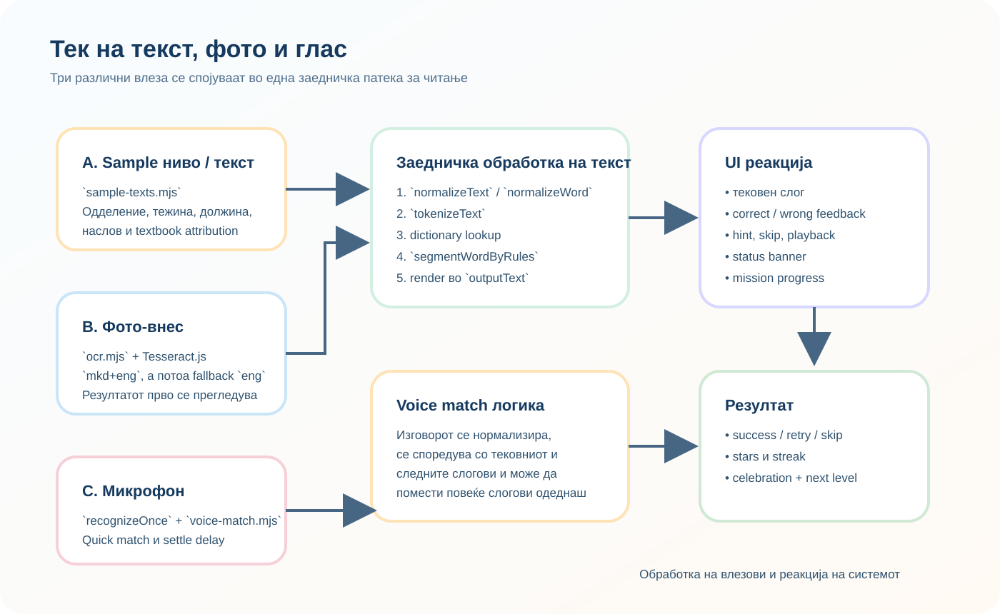
10. Гласовни можности и OCR интеграција
10.1 Читање на глас
src/integrations/speech.mjs користи speechSynthesis за да ја прочита содржината.
Системот:
- ги листа достапните гласови;
- се обидува да преферира македонски глас;
- дозволува рачен избор на конкретен глас;
- го зачувува изборот во
localStorage.
Ова е важно затоа што корисничкото искуство не е исто ако прелистувачот избере произволен глас на друг јазик. Кодот препознава македонски гласови и според јазичен код и според име на глас.
10.2 Препознавање глас
За микрофонската логика се користи SpeechRecognition или webkitSpeechRecognition.
Функцијата recognizeOnce():
- бара дозвола за микрофон;
- слуша ограничено време;
- собира interim и final transcript;
- може да се реши порано ако се препознае доволно силен сигнал;
- реагира на timeout, abort и празен резултат.
Овој дел е една од најсложените технички компоненти во проектот.
10.3 Брзо слушање и „почекај по кажано“
Во играта постојат две посебни микрофонски поставки:
microphoneQuickMatchmicrophoneSettleDelayMs
microphoneQuickMatch му дозволува на системот порано да реагира ако interim transcript веќе изгледа
како точен погодок. microphoneSettleDelayMs пак одредува колку кратко системот ќе почека за да види
дали корисникот ќе продолжи со уште некој слог. Ваквата комбинација е паметна затоа што овозможува фино
балансирање меѓу брзина и стабилност.
10.4 Логика за voice-match
src/ui/voice-match.mjs не споредува само една текстуална низа со една очекувана вредност. Наместо
тоа:
- го нормализира слушнатиот текст;
- го дели на слоговни кандидати;
- го споредува со тековниот и следните слогови;
- проверува и споени форми без цртички;
- поддржува partial match за побрза реакција.
Табела 9. Примери од unit тестовите за voice match
| Очекувани слогови | Слушнат текст | Резултат |
|---|---|---|
["и", "ма", "но"] |
има |
напредување за 2 слога |
["што", "и", "ма", "но", "во"] |
што има ново |
напредување за 5 слога |
["и", "ма"] |
им |
partial погодок кога е вклучен allowPartial |
["на", "сме", "вка", "та"] |
насмевката |
напредување за 4 слога |
10.5 OCR внес од фотографија
src/integrations/ocr.mjs lazy-loadира Tesseract.js од CDN. Конфигурацијата е дефинирана
во src/config/integrations.mjs:
scriptUrl: Tesseract CDN;primaryLanguage:mkd;
При процесирање на фотографијата апликацијата:
- ја прикажува тековната фаза на OCR;
- го внесува добиениот текст во
textarea; - му дозволува на корисникот да го коригира рачно;
- веднаш го рендерира за понатамошно читање.
Ова е многу корисна функционалност за реална употреба, затоа што ја поврзува дигиталната апликација со печатени наставни материјали.
11. Гемификација
11.1 Поени, ниво и низа
Во src/ui/progression.mjs и src/ui/app.mjs се дефинирани правилата за напредок. При
точен погодок во игра:
- поените се зголемуваат за
10 * број на погодени слогови; - низата (
streak) расте; - нивото се пресметува со
floor(score / 60) + 1.
11.2 Milestone моменти
Проектот користи milestone вредности на низа: 3, 5, 8, 12.
Кога корисникот ќе достигне таква вредност, интерфејсот го одбележува тоа со дополнителна анимација и звук.
11.3 Ѕвезди
Ѕвездите се доделуваат по завршување на мисијата:
- 3 ѕвезди ако нема грешки;
- 2 ѕвезди ако грешките се во прифатлива граница;
- 1 ѕвезда ако мисијата е завршена, но со повеќе поправки.
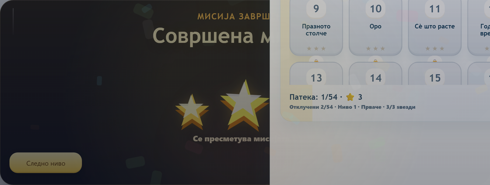
11.4 Стикери
Системот користи и мала колекција од четири стикери:
starterза прв точен погодок;sparkза низа од најмалку 3;cometза низа од најмалку 5;perfectза завршен круг без грешка.
11.5 Прослава и следно ниво
Кога корисникот успешно ќе заврши мисија:
- се појавува celebration panel;
- се анимира star rating;
- се активира confetti;
- резултатот се запишува;
- ако постои следно ниво, копчето нуди премин кон него.
12. Заклучок
„Букварче“ е апликација наменета за поддршка при учење читање на македонски јазик. Таа овозможува разделување на слогови, интерактивно читање, вежбање и следење на напредокот.
Проектот ги поврзува програмерските знаења со образовна примена. Притоа, вниманието е насочено кон едноставно користење, прегледност и основни функционалности што се потребни за оваа намена.
Темата на проектот е поврзана со почетното учење читање и со можностите за примена на информатичките технологии во образованието.
13. Користена литература
- Делчева-Диздаревиќ, Јасмина. Македонски јазик, 1 одделение. е-учебници PDF:
https://www.e-ucebnici.mon.gov.mk/pdf/Makedonski%20jazik%20za%201%20odd.%20PRINT.pdf. - Делчева-Диздаревиќ, Јасмина. Македонски јазик, 2 одделение. е-учебници PDF:
https://www.e-ucebnici.mon.gov.mk/pdf/Makedonskijazik_2_makedonski.pdf. - Правопис на македонскиот јазик. Електронско издание:
https://pravopis.mk/sites/default/files/Pravopis-2017.PDF. - MDN Web Docs. JavaScript
modules
https://developer.mozilla.org/en-US/docs/Web/JavaScript/Guide/Modules. - MDN Web Docs. Web Speech
API
https://developer.mozilla.org/en-US/docs/Web/API/Web_Speech_API. - Tesseract.js.
https://github.com/naptha/tesseract.js.